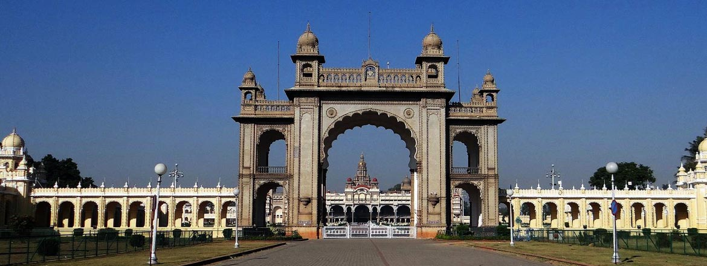

TIMINGS FOR VISITORS

- PALACE ENTRANCE TIMINGS: EVERYDAY FROM 10.00 AM TO 5.30 PM.
- Entrance to Palace for Tourists from three Gates :
: Varaha and Amba Vilas Gate at South and Jayarama Balarama Gate at North.
- Tickets issued for Palace Entrance between 10.00AM – 5.30 PM.
- ILLUMINATION TIMINGS - SUNDAYS & PUBLIC HOLIDAYS : 7.00 PM - 8.00 PM
- A 45 minute sound and light show, depicting the 400 year history of Mysuru.
- Kannada :: Monday to Wednesday - Time 7.00 PM to 8.00 PM & Saturday - Time 8.15 PM to 9.15 PM -
Entrance Ticket in Rs. Adults 70 & Children Rs 30 / Ticket.
- English :: Thursday to Saturday - Time 7.00 PM to 8.00 PM - Entrance Ticket in Rs. Adults 90 & Children Rs 40 / Ticket.
- 15 Minutes Palace Illumination can be seen at the end of the Sound and Light Program Show.
- Ticket will be issued only at Varaha Gate Counter (South Side) from 6.30pm onwards